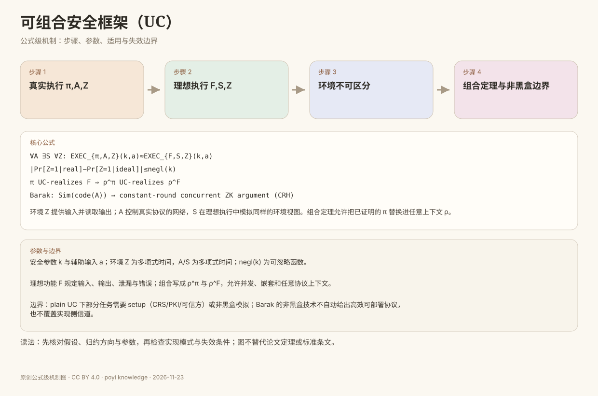
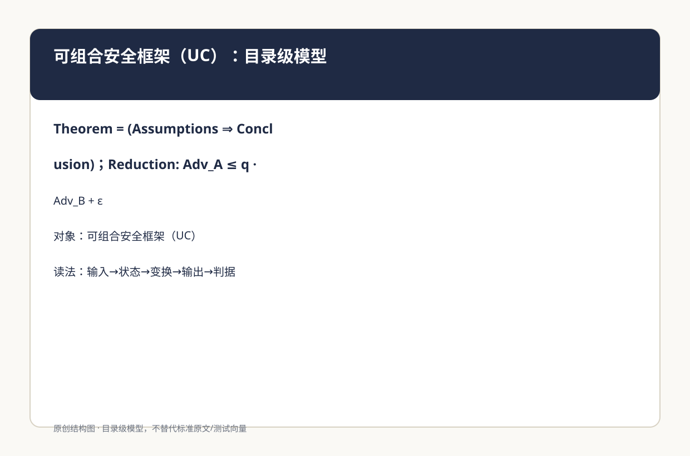

原理与机制
定理：可组合安全框架（UC）（Universally Composable Security (UC)）。### 真实与理想执行
协议 π 在环境 Z、敌手 A 下的执行记为 EXEC_{π,A,Z}(k,a)；理想功能 F 在模拟器 S 下的执行记为 EXEC_{F,S,Z}(k,a)。UC 安全（UC-emulation）要求：
∀A ∃S ∀Z: EXEC_{π,A,Z}(k,a)≈EXEC_{F,S,Z}(k,a)，
等价地，环境区分真实与理想执行的优势满足
|Pr[Z=1|real]−Pr[Z=1|ideal]|≤negl(k)。### 组合定理
若 π UC-realizes F，则对任意协议上下文 ρ，ρ^π UC-realizes ρ^F。也就是说，已证明的组件可以替换进任意系统，仍保持理想功能的规格；组合允许并发、嵌套和任意协议实例。Barak 2001 把敌手代码作为模拟器的辅助输入，构造非黑盒模拟器；在抗碰撞杂凑假设下得到常数轮、并发 n 次仍零知识的 NP argument。这说明模拟器不必只把 A 当黑盒，但该技术不等同于所有 UC 任务的高效构造。

为什么重要
UC 把“安全”写成“在任意环境里与理想功能不可区分”。这比“某个游戏里敌手赢不了”更强：它要求协议在被并发调用、嵌套调用或与其他协议组合时仍不泄漏额外信息。理想功能 F 是规格，模拟器 S 负责解释真实协议可能泄漏的一切。
应用与实例
1.写规格：先定义理想功能 F 的输入、输出、泄漏和错误行为，再讨论协议。2.证模拟：对任意 A 构造 S，让 Z 不能区分 real 与 ideal；不要只证某个孤立游戏。3.用组合：先证 π realizes F，再在上下文 ρ 中替换；检查 setup、联合状态与并发假设。4.标边界：明确 corruption 模型、环境是否非均匀、是否需要 CRS/PKI/可信方。### 不能怎么用
不能把 UC 标签当成无条件安全证明；不能在无 setup 的 plain UC 下声称所有任务都可实现；不能把 Barak 的非黑盒模拟当成通用效率方案；不能忽略实现侧信道。

边界与攻击面
1.Setup 假设：许多任务在 plain UC 下需要 CRS、PKI、可信方或全局 setup；省略 setup 会让组合定理的前提失效。2.模拟器限制：黑盒模拟并非万能；Barak 的非黑盒模拟依赖敌手代码与 CRH 假设，且可能不高效、不可审计。3.腐败与环境：自适应腐败、环境辅助输入、非均匀敌手、联合状态与全局子程序都会改变定义与证明。4.实现层：UC 证明不覆盖侧信道、故障注入、代码漏洞或部署配置；该条目不给实现认证。
历史与背景
Canetti 在 ePrint 2000/067（FOCS 2001）提出 UC 框架与 universal composition，把协议安全写成任意环境下的 real/ideal 不可区分，并给出组合定理。Barak 2001 在 FOCS 给出非黑盒模拟器，突破黑盒模拟屏障，构造常数轮并发零知识 argument。ePrint 2000/067 的 2020 修订版明确说明定义与结果细节相较早期版本有变化；该条目按该修订版的框架表述，不把早期版本的具体引理当作现行定义。
技术参数与复算边界
该条目的形式模型是 (\Pr[\mathrm{Bad}_A(\lambda)]\le \varepsilon(\lambda))。输入：输入：可组合安全框架（UC）的公开参数、密钥/随机数与消息；变量说明：Bad 为归约中定义的失败事件，ε 为可忽略函数。 预期输出：按 可组合安全框架（UC） 的规范执行后得到可验证的输出或可比较的优势界。 复算必须给出输入、步骤、输出和单位；示例只演示流程，不替代标准测试向量。
复杂度由密钥长度、分组/状态规模、轮数、随机数质量和敌手模型共同决定；参数越界、版本差异与实现侧信道都可能使公式结论失效。已登记限制：该条目只给出形式模型与可复算步骤，不声称已完成生产实现、侧信道认证或第三方安全评估。
逐步示例与核验
形式模型与复算步骤
[\Pr[\mathrm{Bad}_A(\lambda)]\le \varepsilon(\lambda)]
可组合安全框架（UC）的公开参数、密钥/随机数与消息；变量说明：Bad 为归约中定义的失败事件，ε 为可忽略函数。1.定义失败事件。2.构造归约把攻击者转成困难问题求解器。3.证明失败概率上界。边界：公式只覆盖已登记的参数与假设；参数取值、标准版本和实现细节仍以来源为准。
参考出处
- Wikipedia search entry for 可组合安全框架（UC）. https://zh.wikipedia.org/w/index.php?search=%E5%8F%AF%E7%BB%84%E5%90%88%E5%AE%89%E5%85%A8%E6%A1%86%E6%9E%B6%EF%BC%88UC%EF%BC%89
- Handbook of Applied Cryptography (Menezes, van Oorschot, Vanstone). https://www.cacr.math.uwaterloo.ca/hac/